Acesse o link para acesso ao
Passo 8: Preencha os dados solicitados
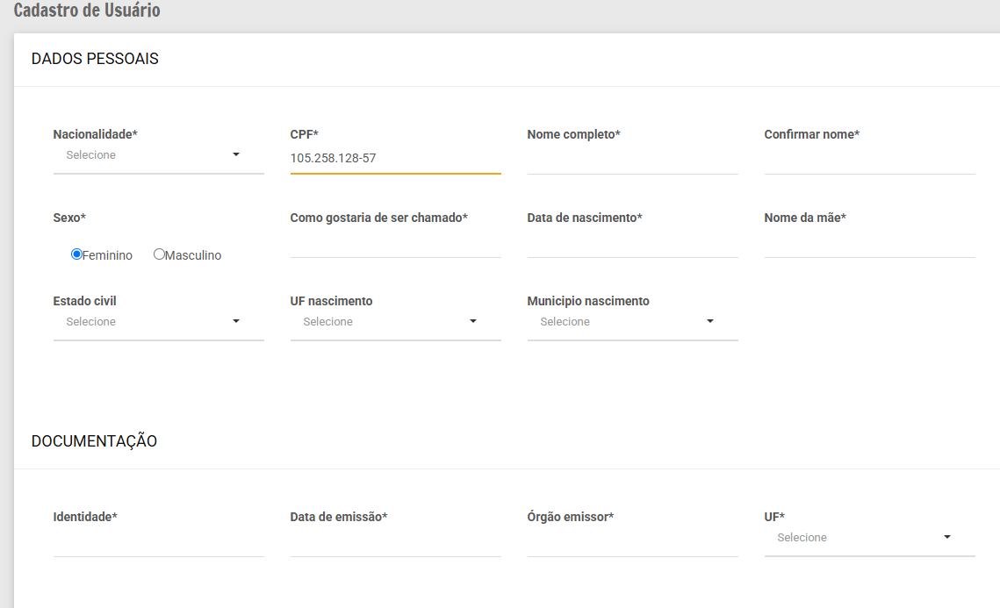Passo 9: Preencha os dados solicitados
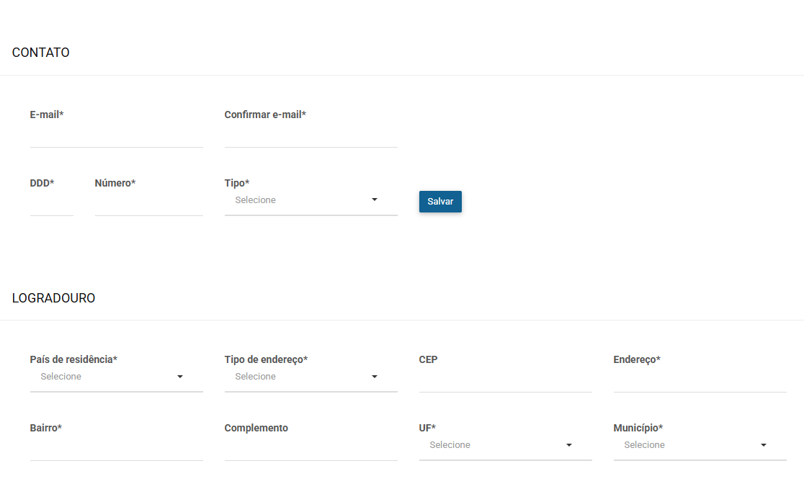
Passo 10: Atenção! Todos devem digitar Marília em
Passo 11: Preencha os dados solicitados
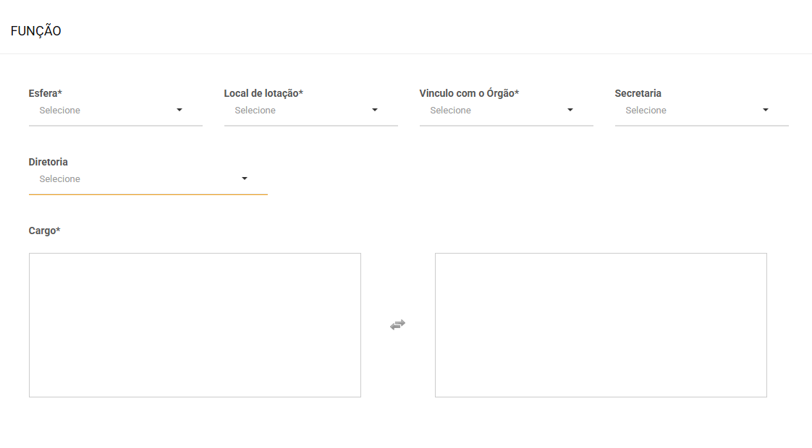Passo 12: Preencha os dados solicitados. Pode manter em nenhuma, se for o caso.
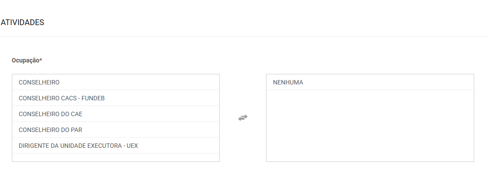Passo 13: Preencha os dados solicitados. A imagem de perfil não é obrigatória. Clique em Salvar.
A imagem de perfil não é obrigatória. Clique em Salvar.
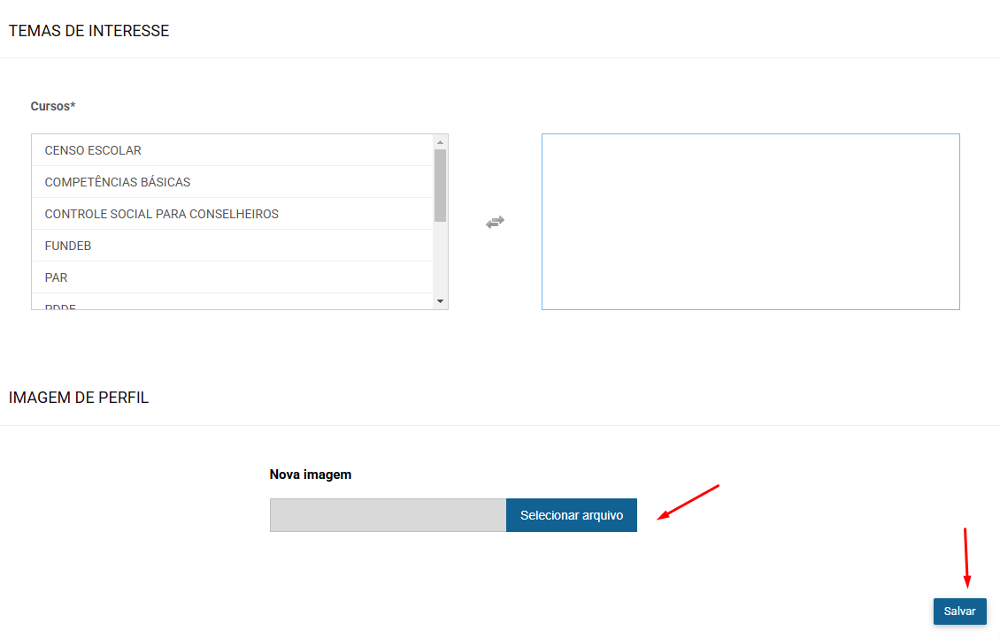Passo 1: acesse o SIFE da FNDE
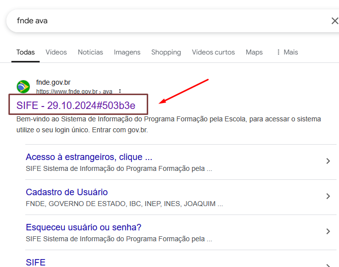Passo 2: digite o número do teu CPF
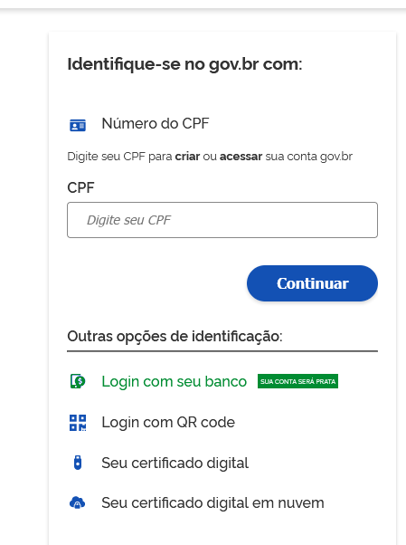Passo 3: digite a senha GOV
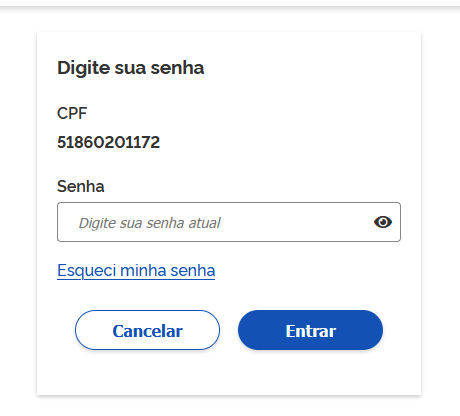Passo 4: clique em ok para confirmar o login com sucesso
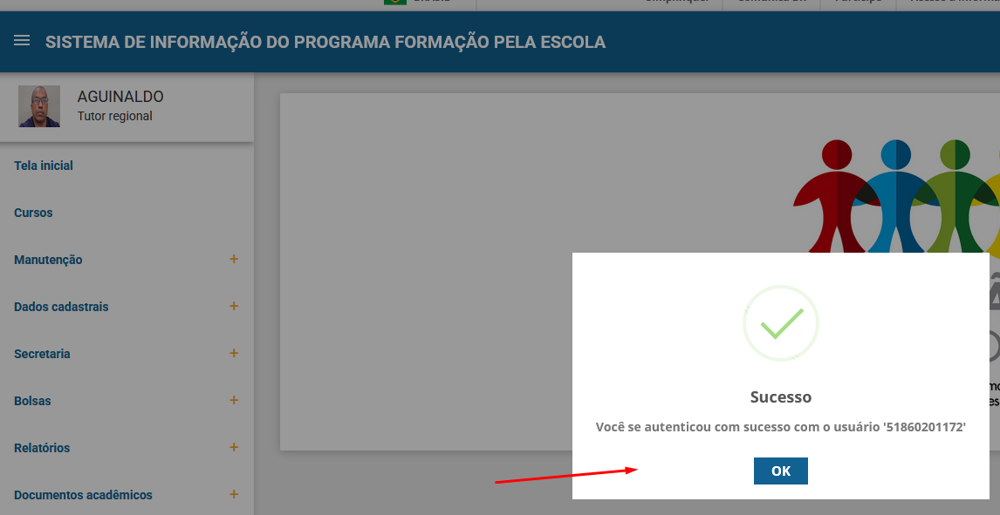Passo 5: clique no item de menu "Cursos"
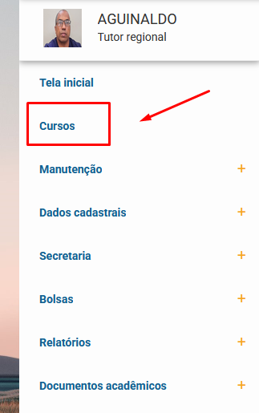Passo 6: Não faça inscrição em nenhum destes cursos
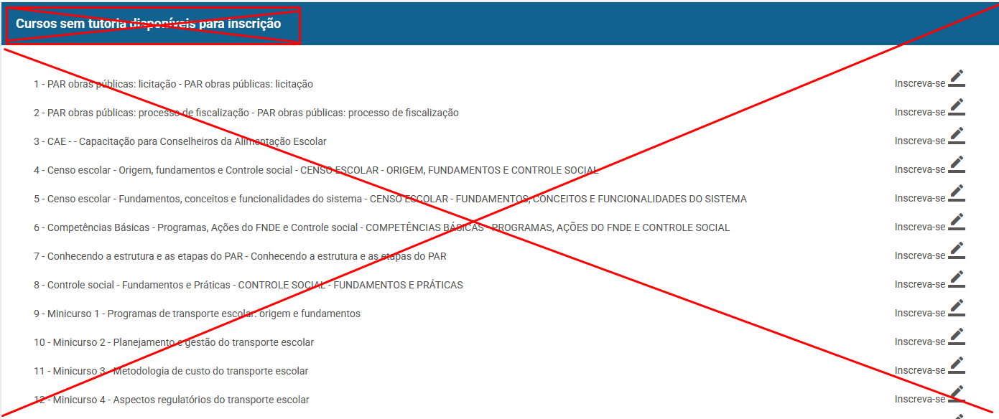Passo 7: Clique em Prestação de contas SP para iniciar a inscrição
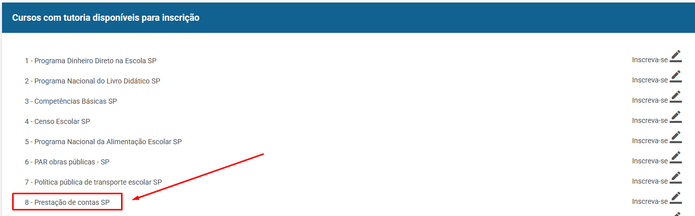É muito importante que o cursista envie um print para o meu WhatsApp para confirmar a matrícula no curso correto.